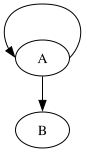

EXCLUDED at SR6. Self-edges already route faithfully (plain self-loops are byte-identical; n/s side ports ≤0.32pt). The lateral e/w loop diverges via the frozen selfRightSpace node-width reservation (AD5).
The drawings below are the actual rendered SVGs — the visual match is the test. Backgrounds are a checker pattern so white fills show.

Self-loop path control points (graph has ; A->B to expose the node shift).
| pt | dot 15.0.0 | graphviz-ts | Δ |
|---|---|---|---|
| 0 | 65.77,-90.00 | 71.01,-90.00 | 5.24 |
| 1 | 83.52,-108.00 | 89.01,-108.00 | 5.49 |
| 3 | 38.52,-144.00 | 44.01,-144.00 | 5.49 |
| 5 | -5.44,-118.13 | 0.00,-117.89 | 5.45 |
| arrow tip | 10.37,-91.22 | 16.10,-91.21 | 5.73 |
The loop shape is faithful (same lateral double-bulge, vertical extent to y=-144 exact), but the whole node-A region is translated ~5.5pt in x.
The incident A->B edge shifts the same ~5.5pt (start x 38.52 vs 44.01), confirming the cause is node A’s reserved width (frozen selfRightSpace), not the loop spline.
SR6’s seam is self-loop.ts (already faithful). The lateral width reservation is in the AD5-frozen splines-selfedge.ts. Surfaced, not chased.